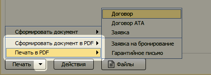
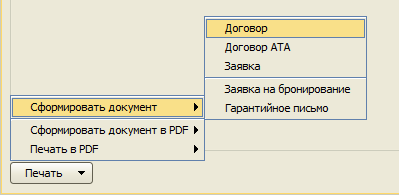
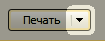
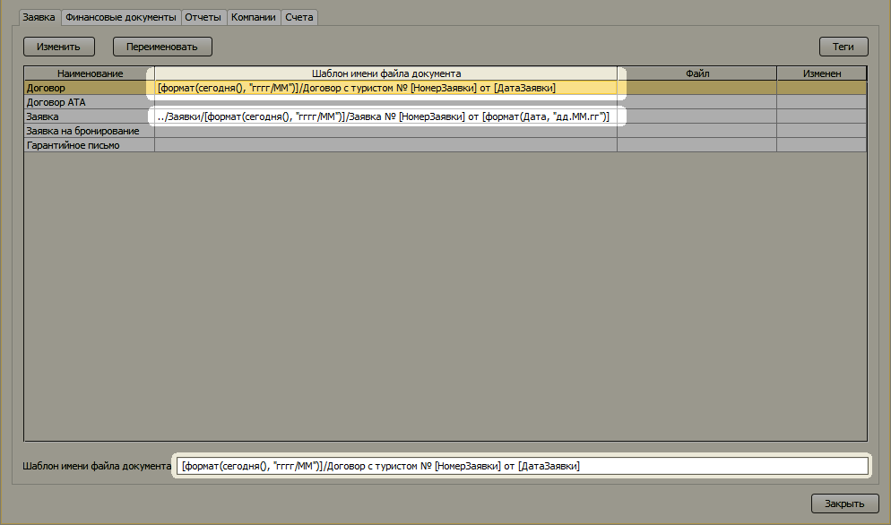
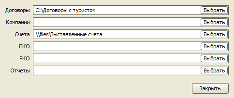

Изменения в версии 2.9.10
- Печатные формы документов в PDF (только в версии Pro)
- Новое меню для печати и формирования документов
- Шаблоны для имен файлов документов (только в версии Pro)
- Определение папок для файлов печатных форм документов (только в версии Pro)
- Печать только через PDF
- Отключение автоматического обновления программы
- Подтверждение закрытия программы
Печатные формы документов в PDF
(только в версии Pro)
Для работы этой функции необходимо иметь на компьютере установленный офисный пакет LibreOffice, даже если вы используете Microsoft Office. Дистрибутив можно скачать на официальном сайте LibreOffice. Для показа файлов в формате PDF требуется специальная программа, например, Adobe Reader.
В меню "Печать" заявки и других документов теперь доступны пункты для создания печатной формы в формате PDF.

Новое меню для печати и формирования документов

У кнопки "Печать" в заявке и других документах появилась возможность вызвать дополнительное меню, нажав правый сегмент с иконкой . В этом меню доступны новые функции:
- Сформировать документ – создает файл печатной формы и открывает папку с этим файлом.
- Сформировать документ в PDF – создает файл печатной формы в формате PDF и открывает папку с этим файлом (доступно только в версии Pro).
- Печать в PDF – создает файл печатной формы в формате PDF и открывает приложение, зарегистрированное в системе для просмотра файлов в формате PDF (доступно только в версии Pro).
Шаблоны для имен файлов документов
(только в версии Pro)
Для каждой печатной формы теперь можно задать шаблон, по которому будет формироваться имя файла документа. Внутри шаблона можно использовать любые теги и функции, доступные для данного типа документа.

Определение папок для файлов печатных форм документов
(только в версии Pro)
Для каждого типа документов и для отчетов можно определить папку, в которую будут сохраняться создаваемые документы печатных форм (меню "Настройки", пункт "Общие настройки", кнопка "Папки документов для печати").

Печать только через PDF
В "Настройки доступа" в карточке пользователя добавлена опция "Печать только через PDF", позволяющая запретить данному пользователю осуществлять печать через документы Microsoft Office. У него остается доступным только формат PDF.
Отключение автоматического обновления программы
В "Пользовательские настройки" добавлена опция "Отключить автоматическое обновление программы". При её включении обновления не будут скачиваться и устанавливаться автоматически, а будет только отображаться информация, что доступна новая версия программы.
Подтверждение закрытия программы
В "Пользовательские настройки" добавлена опция "Подтверждать выход из программы", позволяющая предотвратить случайное закрытие программы. Перед каждым закрытием программы будет отображаться форма, в которой нужно подтвердить данное действие.
Остались вопросы? Напишите нам на e-mail